MyTetra
C++ / QT / WebKit / Органайзер / Простая утилита / Текстовый редактор / Шифрование
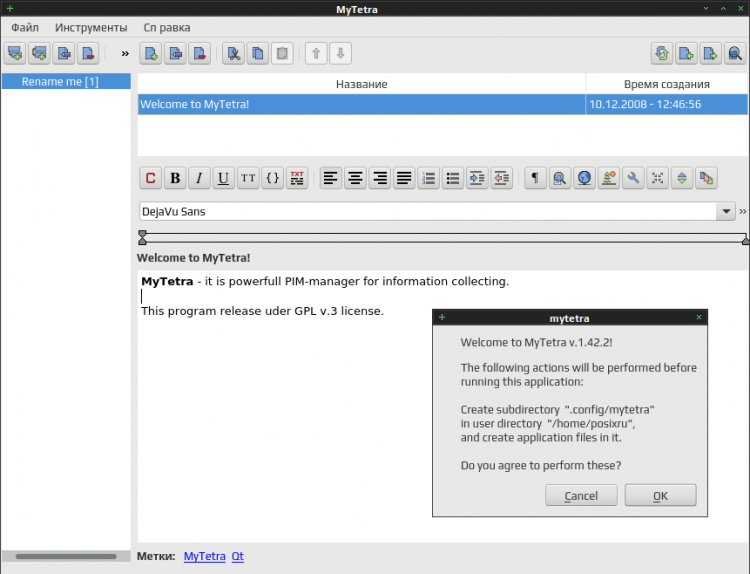
MyTetra — несложное C++ / QT / WebKit графическое приложение для хранения заметок, удобный менеджер накопления информации.
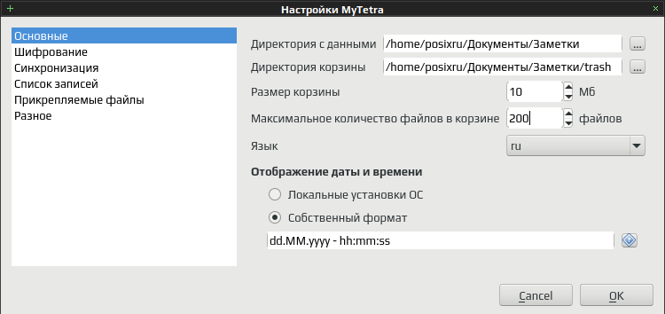
Для написания статей и заметок MyTetra предоставляет интуитивно-понятный пользовательский интерфейс, интегрируется в область уведомлений (трей). Все записи организуются в древовидную (иерархическую) структуру, что обеспечивает быструю навигацию и удобный поиск заметок.
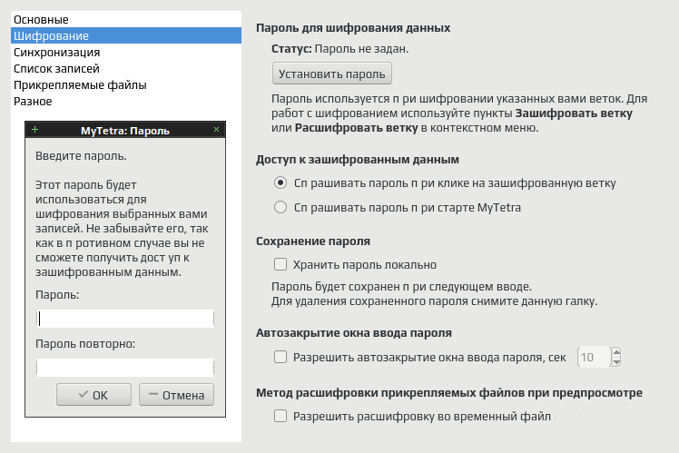
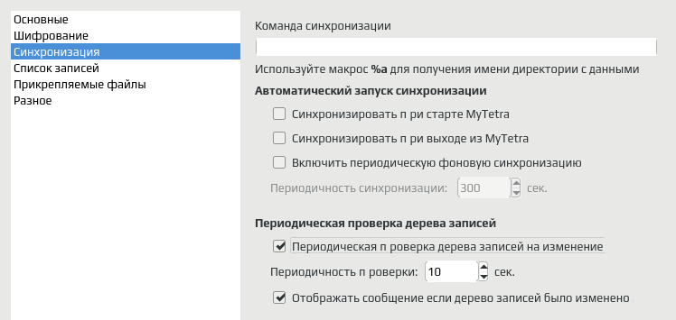
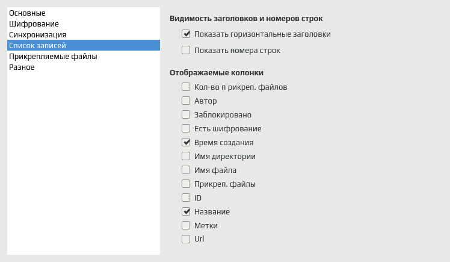
Основное окно MyTetra разделено на четыре области, древо навигации, список записей в выбранной ветке древа, область редактирования выбранной записи и панель поиска (скрываемая). Настройки приложения можно задать в диалоге настройки или прямым редактированием конфигурационного файла.
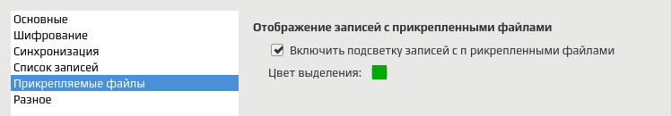
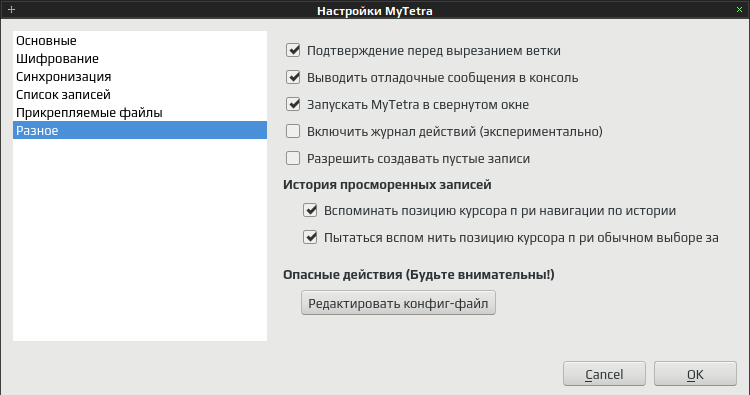
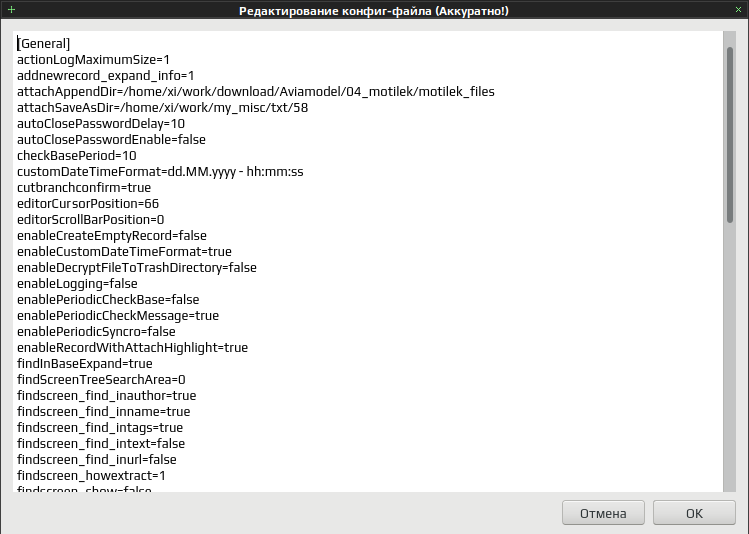
Для добавления и редактирования записей в MyTetra используется интегрированный WYSIWYG-редактор WyEdit, визуальный редактор имеет собственные настройки. Каждая запись предоставляет минимальные информационные поля принятые в библиотечной системе учёта книг, с поправкой на современные технологии. Кроме названия для каждой записи можно задать автора, источник (например веб-адрес) и ключевые слова (метки/теги).
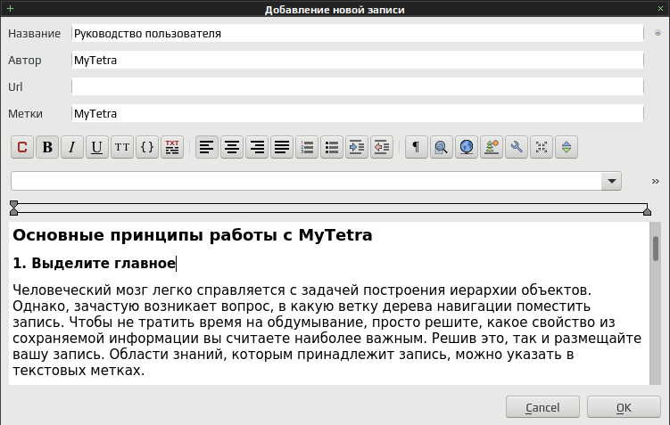
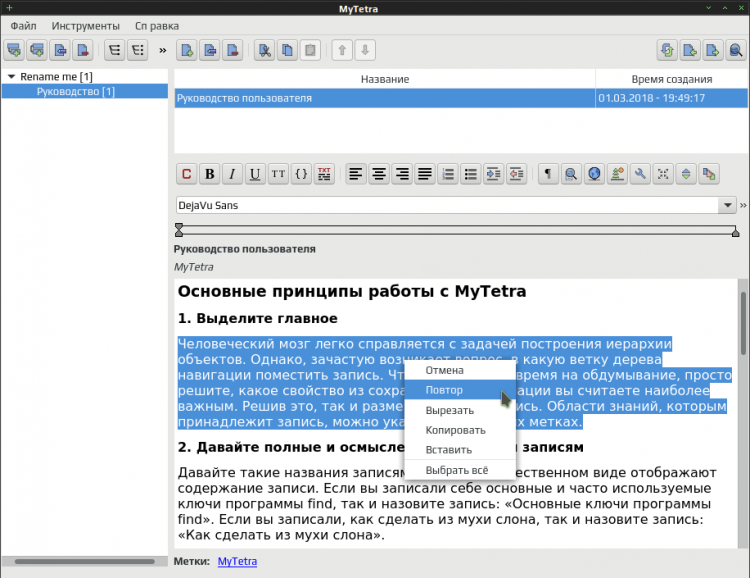
MyTetra при запуске открывает последнюю просматриваемую/редактируемую запись, запоминает размер и расположение окна. Ветки древа навигации можно сортировать в пределах корневой ветки (перемещать вверх/вниз), для веток доступны операции удаления, копирования и вставки.
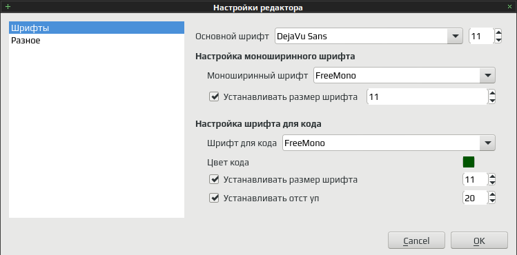
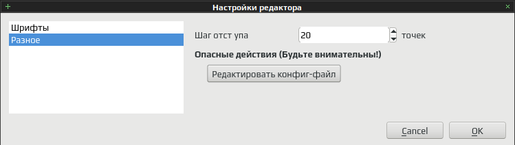
Ответвления (вложения) древа неограниченны, каждому древу ветки можно задать иконку, с приложением поставляется двенадцать наборов иконок в формате SVG (чуть больше 1500), при желании можно добавить собственный набор или отдельную иконку (в каталог ~/.config/mytetra/data/icons).
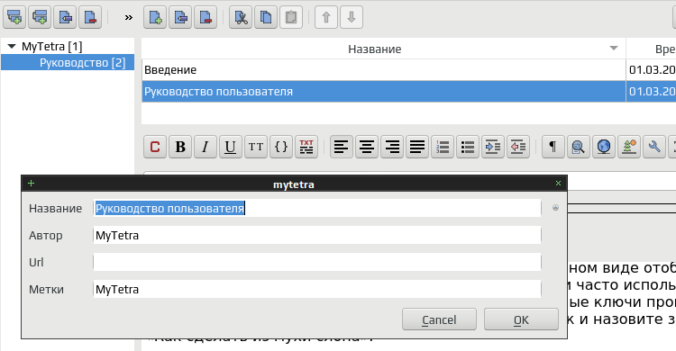
Записи прикреплённые к ветке можно сортировать в пределах списка (перемещать вверх/вниз), доступны операции удаления, копирования и вставки. Выбранная запись сразу доступна для редактирования, без дополнительных действий, если не включена защита от изменений (блокировка записи). Доступен просмотр записи в отдельном окне и правка исходного кода записи.
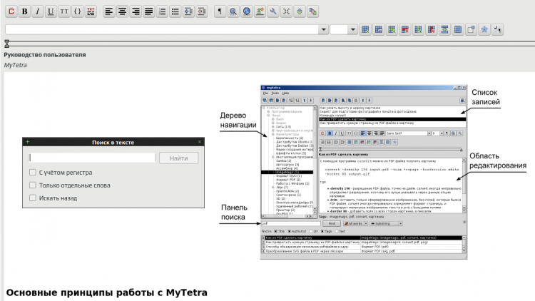
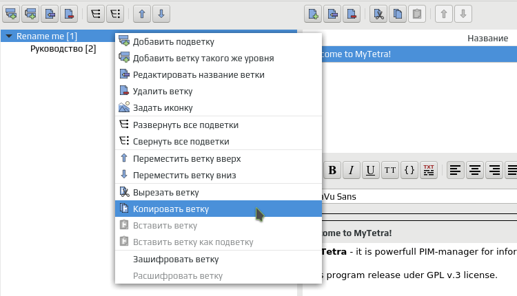
MyTetra автоматически сохраняет внесённые в заметку изменения, при любом "выходе" из редактирования текущей записи (переключении на другую запись древа, добавления новой записи, или закрытии приложения). Поиск в записях может осуществляться по множеству параметру (названию, автору, тегам, ссылке и тексту заметки), искать можно по всей базе или в отдельной ветке древа.
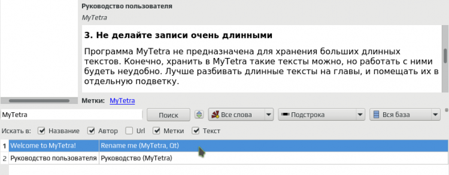
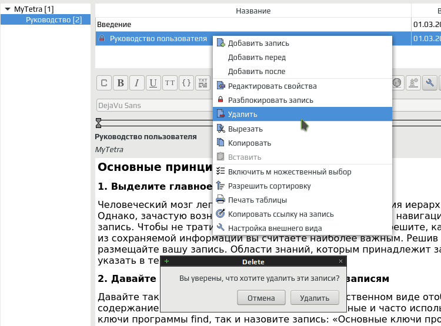
Древо заметок хранится в одном XML-файле с несложным форматом, каждая запись хранится в отдельном каталоге (имеющим уникальный идентификатор), в котором содержится основной HTML-файл и прикреплённые изображения (картинки). В каталог "корзину" автоматически перемещаются предыдущие версии записей, параметры и расположение "корзины" можно задать в настройках.
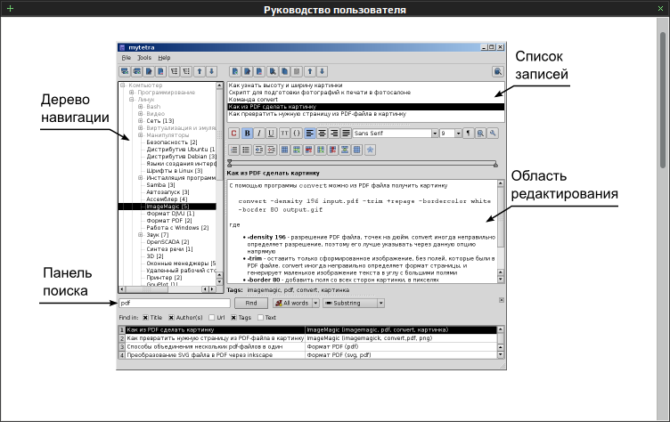
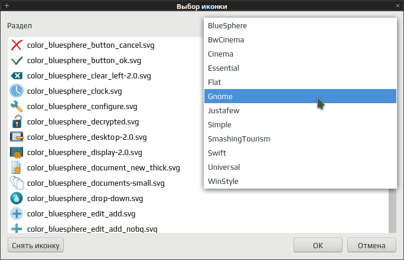
MyTetra позволяет зашифровать всю базу заметок, или отдельные ветви древа (используется QtKeychain / Qt API), поддерживается импорт и экспорт отдельной ветки или всего древа (например для создания резервной копии записей), можно экспортировать запись в PDF-файл или отправить на печать.
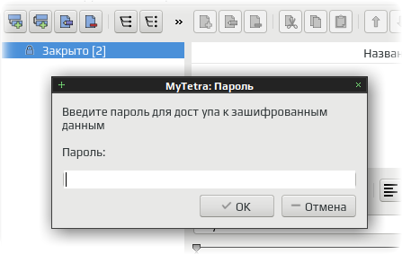
MyTetra опционально поддерживает интеграцию с облачными системами хранения (ownCloud, Nextcloud и др) или системами контроля версий (например Git), ведётся подробный лог событий, управление осуществляется с помощью мыши и/или клавиатурных сочетаний.
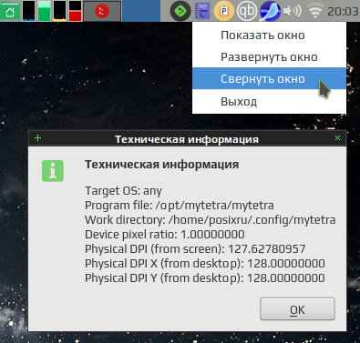
Лицензия: GNU General Public License version 3.0 (GPLv3)
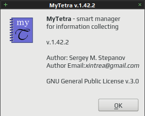